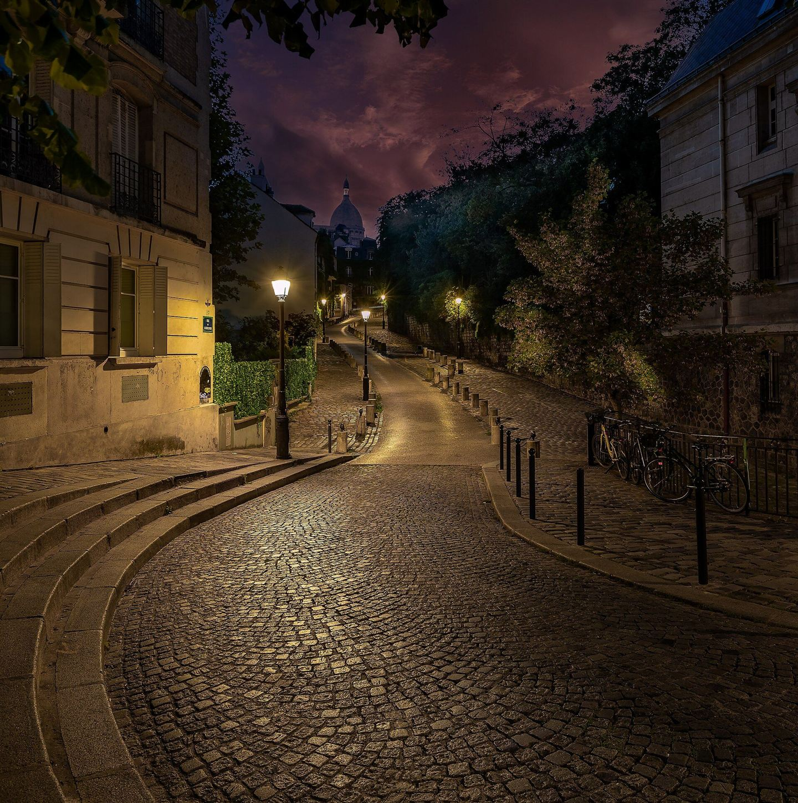

01 / Francia
Lugares para conocer
Un paseo por París puede combinar la Torre Eiffel, las calles de Montmartre y los museos de la ciudad. Elegí algunas paradas y dejá tiempo para caminar entre ellas.
Antes de organizar una visita, consultá el sitio oficial de cada monumento o museo. Revisá las condiciones de acceso y las distancias entre las paradas; así evitás armar un día demasiado ajustado.